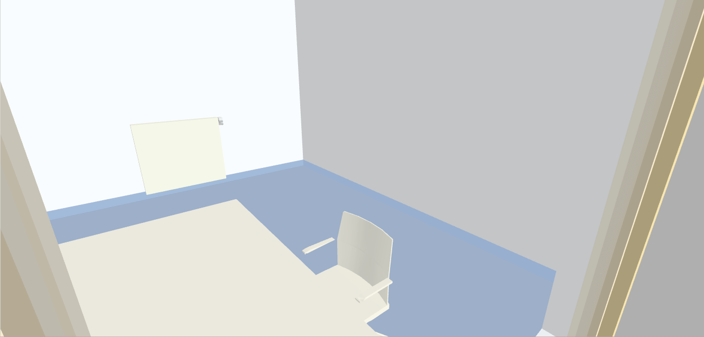
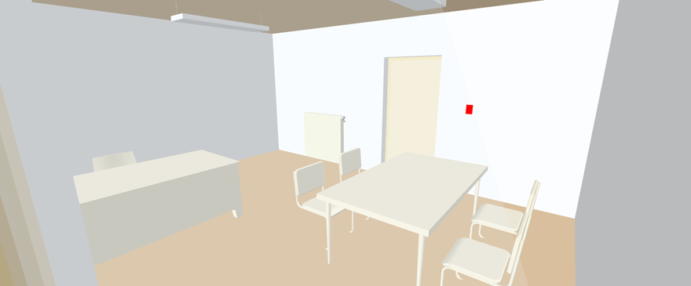
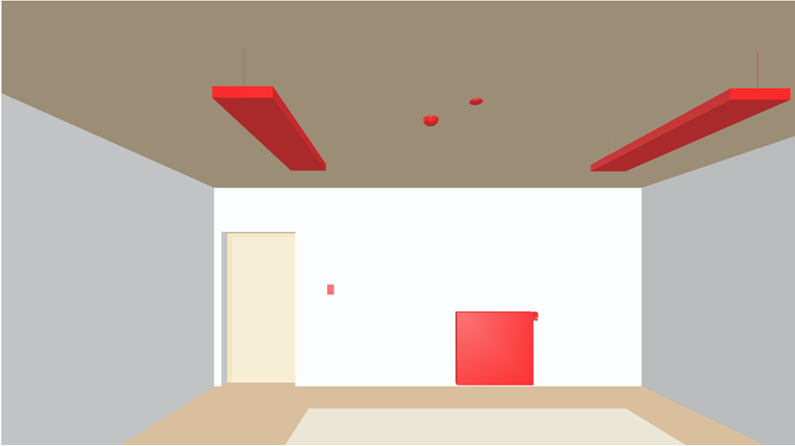

Display Room Information
Prerequisites:
- System Manager is in Operation mode.
- In System Browser, Logical View is selected. BIM graphics can also be selected in the Application View as an alternative.
Room Alarm
- Select Logical > [Subsystem name] > [Building name] > [Floor] > [Room].
- The BIM Viewer tab opens.
- The room is highlighted in the floor view.
- Click Show room alarms .
- Click Show room view .
- The selected room opens. The alarm is displayed on the floor per the alarm category (colors in the alarm overview).
- Click Show related alarms in EventList .
- The event list is filtered and displayed with the floor alarms.
- Acknowledge and reset alarm.
- Click Close event list
 .
. - Click Show floor view .
- The room view is displayed in this example with alarm category Low (blue).

Highlight Individual Equipment
- Select Logical > [Subsystem name] > [Building name] > [Floor] > [Room].
- The BIM Viewer tab opens.
- The room is highlighted in the floor view.
- Click Show room view .
- The selected room opens.
- Click Highlight selected object
 .
.
- The last selected equipment is highlighted in color.

Highlight All Equipment
- Select Logical > [Subsystem name] > [Building name] > [Floor] > [Room].
- The BIM Viewer tab opens.
- The room is highlighted in the floor view.
- Click Show room view .
- The selected room opens.
- Click Highlight equipment of current room .
- All equipment is highlighted in color.

Display Data Sheet
- The URL links in the BIM data are correctly assigned to the objects.
NOTE: Incorrectly assigned URL links must be corrected in the BIM data. URL links cannot be edited in Desigo CC. - An Internet connection is required to open the data sheet via the URL link to a supplier.
- You must have the appropriate user rights at the supplier.
- Select Logical > [Subsystem name] > [Building name] > [Floor] > [Room].
- The BIM Viewer tab opens.
- The room is highlighted in the floor view.
- Click Show room view .
- The selected room opens.
- Click equipment in the room, for example, a room operator unit.
- Click Display the equipment's data sheet
 .
. - Displays a list of available data sheets.
- Click the data sheet in the desired language.
- The data sheet displays in BIM Viewer.
- Click Download or Print to save the information.